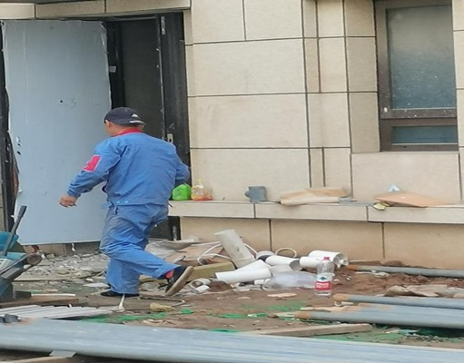
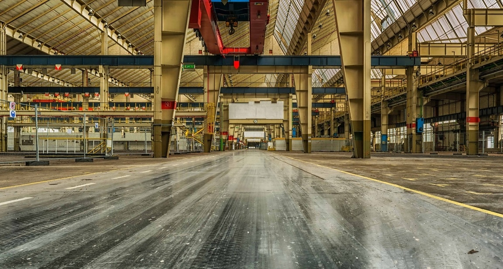
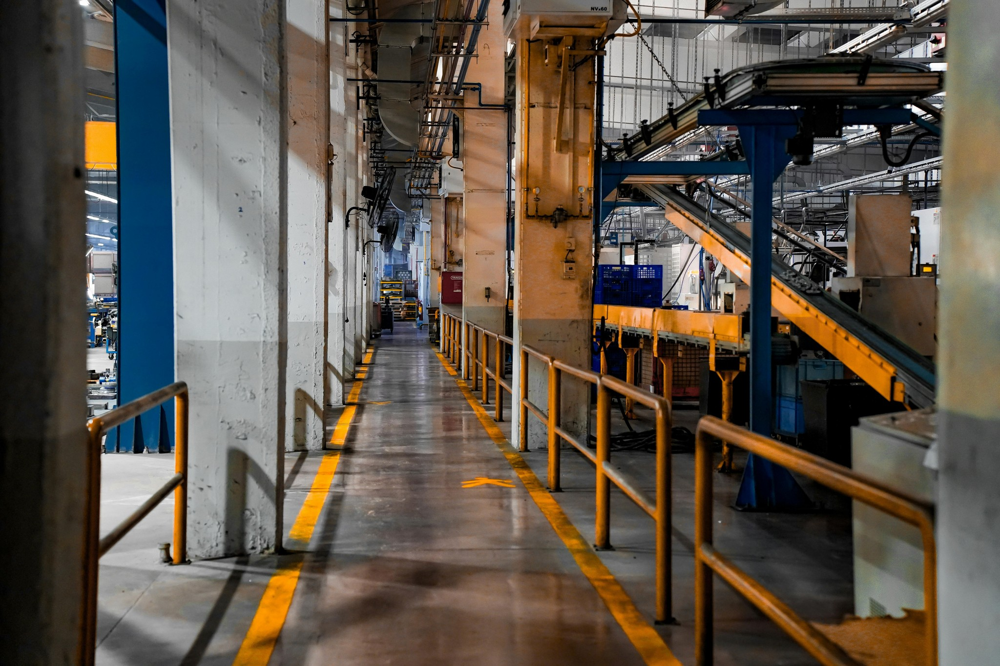

组织架构
共 24 个组织
全部样本
正样本
负样本
视频样本库
样本列表 （共 1,258 条）
排序：上传时间↓
正样本

未佩戴安全帽
人员行为
算法模型：安全帽识别模型V2.1
置信度：96%
来源：人工标注
负样本

正常佩戴安全帽
人员行为
算法模型：安全帽识别模型V2.1
置信度：12%
来源：人工标注
正样本
烟火识别
环境与设施
算法模型：烟火识别模型V1.3
置信度：94%
来源：AI自动采集
负样本

烟火识别
环境与设施
算法模型：烟火识别模型V1.3
置信度：8%
来源：AI自动采集
正样本
高处作业未系安全带
人员行为
算法模型：安全带识别模型V2.0
置信度：93%
来源：人工标注
负样本
高处作业系安全带
人员行为
算法模型：安全带识别模型V2.0
置信度：11%
来源：人工标注
正样本

通道堵塞
环境与设施
算法模型：通道堵塞模型V1.1
置信度：92%
来源：AI自动采集
负样本
通道通畅
环境与设施
算法模型：通道堵塞模型V1.1
置信度：7%
来源：AI自动采集
共 1,258 条
...
跳至
页